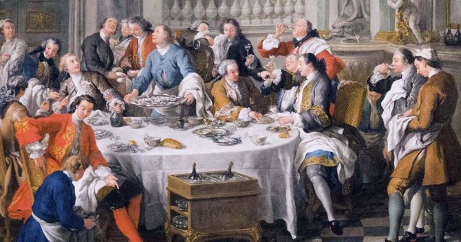
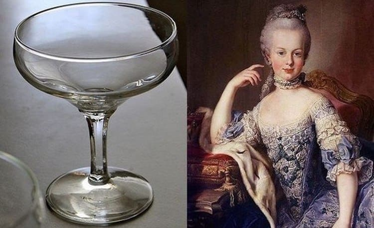

История в бокалах . Введение. Жизненно важные жидкости .


Единой истории человечества нет, есть лишь бесконечное множество историй, связанных с разными аспектами человеческой жизни.
Жажда смертельнее голода. Если без еды можно обходиться несколько недель, то без жидкости не продержаться и несколько дней. Только дыхание значит для нас больше. Десятки тысяч лет назад древние люди, кочующие небольшими группами в поисках продовольствия, селились рядом с реками, ручьями и озерами, чтобы иметь достаточный запас пресной воды, поскольку хранить и переносить ее было непрактично. Вода и ее доступность с самого начала ограничивали прогресс и направляли развитие человечества. И продолжают формировать нашу историю до сих пор.
Только в последние 10 тысяч лет появились напитки, которые бросили вызов воде. Эти напитки изначально не существовали ни в каком количестве и производились целенаправленно. Они служили альтернативой загрязненной воде, опасной для человека. Но не только.
Новые напитки стали играть множество других ролей. Они применялись в качестве валюты, в религиозных обрядах, как политические символы или источники философского и художественного вдохновения; подчеркивали власть и статус одних и позволяли контролировать других. Напитки использовались, чтобы праздновать рождение человека и отмечать его смерть, создавать и усиливать социальные связи, обмывать сделки, обострять чувства и стимулировать ум, служить основой для спасительных лекарств и смертельных ядов.
История текла и изменялась. Разные напитки занимали доминирующее положение в различные эпохи в разных местах и культурах – от деревень каменного века до древнегреческих залов и кофеен эпохи Просвещения. Каждый напиток становился популярным тогда, когда это соответствовало велению времени, и иногда это меняло ход исторических событий самым неожиданным образом.
Археологи делят историю на различные периоды на основе используемых материалов – каменный век, бронзовый век, железный век и т. д., – и так же можно выделить периоды, связанные с различными напитками. Шесть напитков – пиво, вино, крепкий алкоголь, кофе, чай и кола – сыграли особую роль. Именно они направляют поток всемирной истории. Три из них содержат алкоголь, три – кофеин, но в большей степени их объединяет то, что каждый был определяющим напитком в тот или иной исторический период от Античности до наших дней.
Человечество встало на путь, ведущий к современности, когда человек начал заниматься сельским хозяйством, главным образом культивированием злаков. Впервые это произошло на Ближнем Востоке около 10 тысяч лет назад и сопровождалось появлением рудиментной формы пива. Первые цивилизации возникли почти 5 тысяч лет спустя в Месопотамии и Египте, двух параллельных культурах, развитие которых основано на избытке злаков, производимых организованным сельским хозяйством в массовом масштабе. Это освободило часть населения от необходимости работать в поле и обеспечило появление священников, администраторов-бюрократов, книжников и ремесленников. Пиво не только питало жителей первых городов и авторов первых письменных документов, но и служило (вместе с хлебом) их заработной платой.
Процветающая культура городов-государств Древней Греции в I тысячелетии до н. э. породила успехи в философии, политике, науке и литературе, на которых базируется современная западная цивилизация. Вино было источником жизненной силы этой средиземноморской цивилизации и основой обширной морской торговли, которая способствовала распространению греческих идей. Политика, поэзия и философия были предметом разговора на вечеринках или симпозиумах, участники которых пили разбавленное вино из общей чаши. Распространение вина продолжалось при римлянах, структура иерархического общества которых отражалась в тонко откалиброванном иерархическом порядке вин и винных стилей. Две из основных религий мира вынесли вину противоположные приговоры. Вино находится в основе христианского ритуала Евхаристии и после распада Римской империи и возникновения ислама запрещено в самом районе его происхождения.
Возрождение западной мысли спустя тысячелетие после падения Рима было вызвано повторным открытием греческого и римского знания, большая часть которого была сохранена и расширена учеными в арабском мире. В то же время европейские исследователи, движимые желанием обойти монополию арабских стран на торговлю с Востоком, отправились на запад – в Америку, и на восток – в Индию и Китай. Были созданы глобальные морские маршруты, и европейские страны соперничали друг с другом в стремлении объять весь земной шар. В эпоху Великих географических открытий на передний план выдвинулся новый ассортимент напитков, который стал возможным благодаря дистилляции – известному в Древнем мире алхимическому процессу, но значительно усовершенствованному арабскими учеными. Дистиллированные напитки представляли собой спирт в компактной, удобной для морской транспортировки форме. Бренди, ром и виски использовались в качестве валюты для покупки рабов и были особенно популярны в североамериканских колониях, где стали настолько политически спорными, что сыграли ключевую роль в создании Соединенных Штатов.
Вслед за географической экспансией последовал ее интеллектуальный аналог. Западные мыслители вышли за рамки давно устоявшихся представлений, унаследованных от греков, разработали новые научные, политические и экономические теории. Главным напитком этой эпохи разума становится кофе, таинственный и модный напиток, прибывший в Европу с Ближнего Востока. Заведения, где подавали кофе, имели совершенно другой характер, нежели таверны со спиртными напитками, и быстро стали центрами коммерческого, политического и интеллектуального обмена. Кофе способствовал ясности мысли, делая его идеальным напитком для ученых, бизнесменов и философов. Обсуждения в кофейнях приводили к созданию научных обществ, газет, финансовых институтов и порождали плодотворную почву для революционной мысли, особенно во Франции.
В некоторых европейских странах, особенно в Великобритании, кофе конкурировал с чаем, импортируемым из Китая. Популярность чая способствовала открытию прибыльных торговых путей с Востока и индустриализации, что позволило Британии стать первой мировой сверхдержавой. После того как чай утвердился как национальный напиток Великобритании, желание сохранить его запасы оказало серьезное и далекоидущее влияние на внешнюю политику Великобритании, способствовало независимости Соединенных Штатов, подрыву древней цивилизации Китая и производству чая в Индии в промышленных масштабах.
Хотя искусственно газированные напитки появились в Европе уже в конце XVIII века, безалкогольные напитки заняли свою нишу лишь с изобретением Coca-Cola сто лет спустя. Первоначально созданная как медицинское тонизирующее средство аптекарем Атланты, она стала национальным напитком Америки, символом энергичного потребительского капитализма, который помог превратить Соединенные Штаты в сверхдержаву. Путешествуя вместе с американскими военными во время всех войн в течение XX века, Coca-Cola стала самым широко известным и распространенным продуктом в мире и теперь является символом вызывающего споры марша на пути к единому глобальному рынку.
`Напитки имели более тесную связь с человеческой цивилизацией, чем принято считать, и оказали большое влияние на его историю. Понимание последствий того, кто пил, что и почему, требует изучения и сопоставления многих разнородных и часто не связанных между собой областей: сельского хозяйства, философии, религии, медицины, технологии и коммерции. Шесть напитков, представленных в этой книге, демонстрируют сложное взаимодействие разных цивилизаций и взаимосвязь мировых культур. Они живут в наших домах как живые напоминания о былых временах, как своего рода льющиеся завещания тех исторических сил, которые сформировали современный мир. Узнайте их историю, и вы будете смотреть на свои любимые напитки совершенно другими глазами.